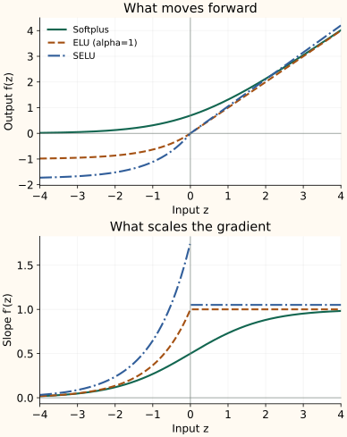

Softplus, ELU, and SELU: Shape the Negative Side
A sharp cutoff is one way to handle negative inputs. We can instead soften the transition, retain a bounded negative response, or scale the whole curve. These choices lead to Softplus, ELU, and SELU.
Softplus smoothly approaches ReLU
For a large positive input, $e^z$ dominates the 1 and the result is close to $z$. For a very negative input, $e^z$ approaches zero and the output approaches zero. At $z=0$, the output is $\log2$, about 0.693—not zero.
Differentiating gives $e^z/(1+e^z)=\sigma(z)$. The slope therefore changes smoothly from zero to one. This removes the ReLU corner but still gives a very small gradient far into the negative tail.
Because Softplus is positive in exact arithmetic, it can parameterize a positive quantity such as a scale. Add an explicit positive floor if the model requires one in floating-point computation. Evaluate it with a stable primitive such as np.logaddexp(0, z); directly forming $e^z$ can overflow.
ELU allows a negative output
For a chosen $\alpha>0$, ELU keeps the positive identity branch and uses an exponential branch below zero:
The negative branch approaches $-\alpha$. Allowing negative activations can reduce the positive mean created by ReLU, though it does not guarantee zero mean. This is part of the motivation in the ELU paper.
Its slope is $\alpha e^z$ for $z<0$ and 1 for $z>0$. The left and right slopes meet at zero only when $\alpha=1$. Even then, a very negative input still has a small derivative: a smooth join does not remove tail saturation.
SELU adds a particular scale
SELU uses the same branch structure with fixed constants:
These constants were chosen so that a mean-and-variance mapping has a stable fixed point near mean zero and variance one under the assumptions of self-normalizing networks. The claim applies to a network setup, not just to inserting this function anywhere.
The intended recipe uses suitable feed-forward layers, appropriately scaled inputs, and LeCun-style initialization with weight variance $1/n_{\mathrm{in}}$. If dropout is used, AlphaDropout is designed to preserve the relevant moments. Ordinary dropout, arbitrary residual additions, and other architectural changes can break that argument.
| Function | −1 | 0 | 1 |
|---|---|---|---|
| Softplus | 0.3133 | 0.6931 | 1.3133 |
| ELU (alpha=1) | -0.6321 | 0.0000 | 1.0000 |
| SELU | -1.1113 | 0.0000 | 1.0507 |


Choose the property you actually need
Softplus is useful for positive outputs and a smooth rectifier shape. ELU is a candidate when negative hidden outputs are desirable. SELU is a coordinated initialization-and-architecture choice. None removes the need to inspect activation distributions during training.
The curves in this chapter are increasing. GELU introduces a smooth negative dip by multiplying the input by a data-dependent weight.